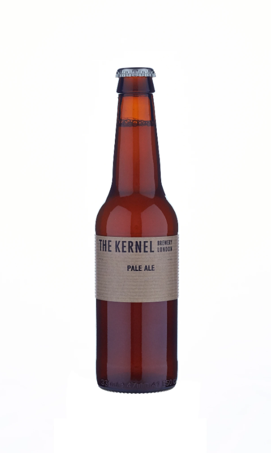
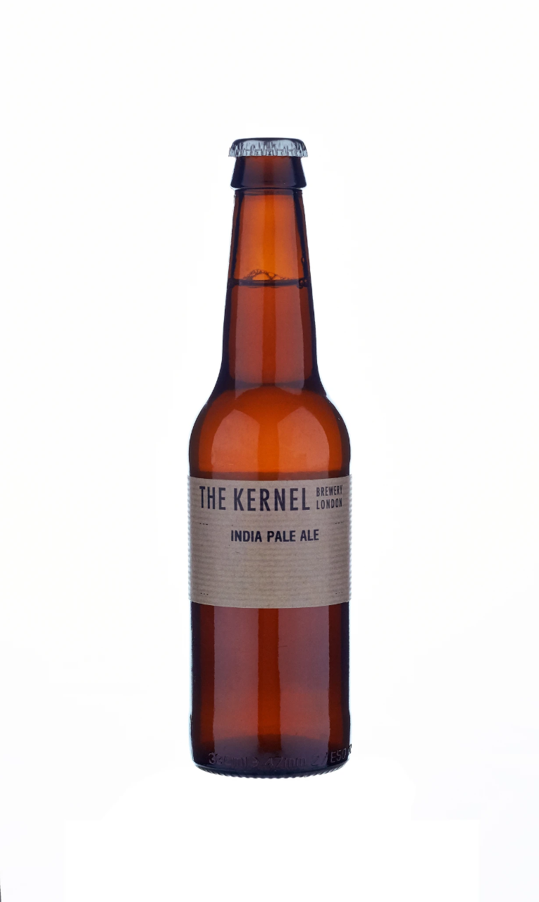
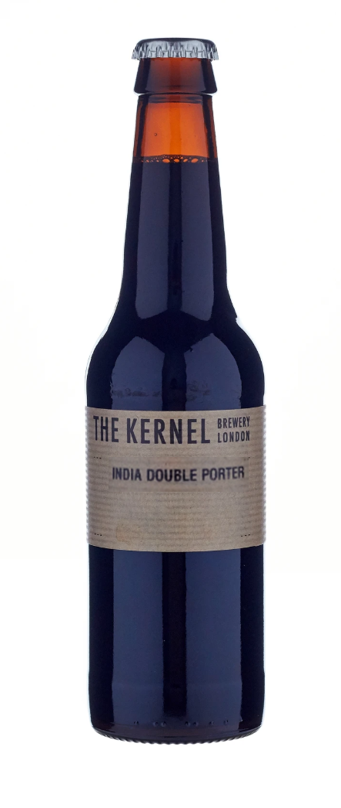
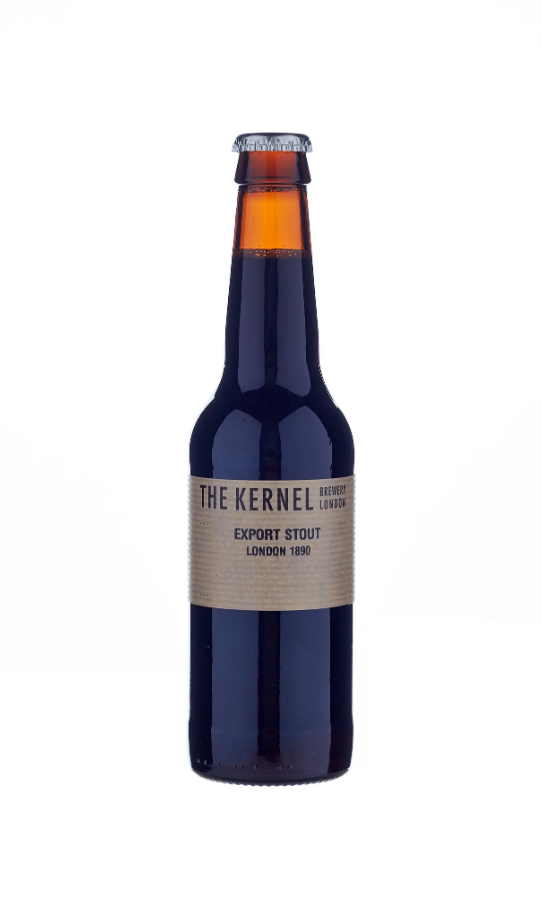
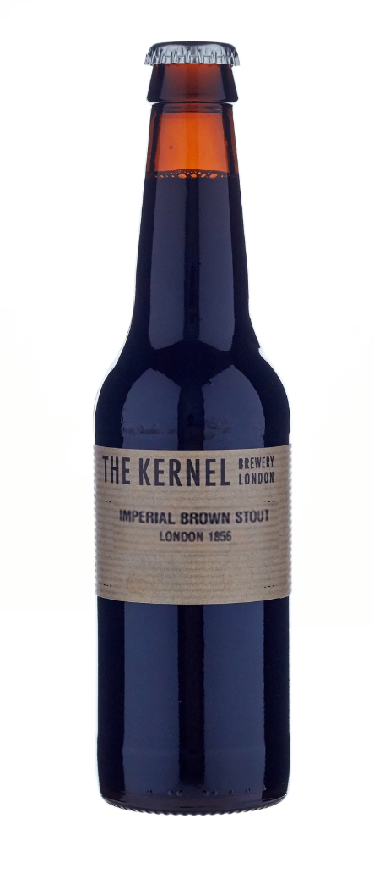
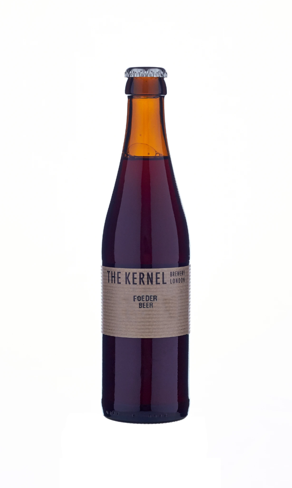

You won't find our beers under a multitude of different names.
Rather we brew the following styles, and each time we'll change them up slightly.
That might be different hops, or a different adjunct added.
Click on the images below to learn more about the styles we brew.
Pale & Hoppy


Dark



Sours & Saisons
